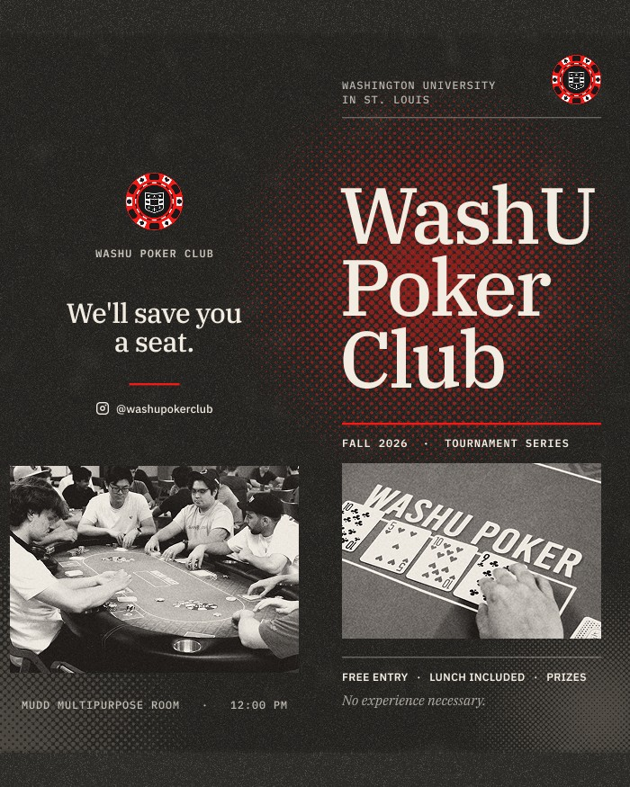
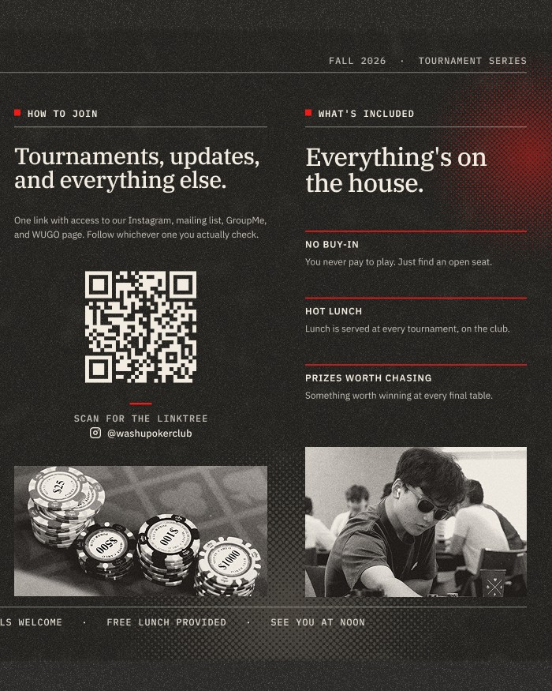

WashU Poker Club
- Visual Marketing
- Social Media Design
- Art Direction
WashU Poker Club is a student-run organization at Washington University that hosts monthly recreational tournaments open to all students and a competitive Intercollegiate Poker Association team. I developed a visual identity and communications system that could bring consistency to the club’s events, social media, and promotional materials while helping establish a recognizable presence on campus.


Objective
When I joined the club, it had an established name and meeting space but lacked a cohesive visual identity. As the organization expanded its tournament programming and competitive team, it needed a system that could communicate events clearly, introduce new students to the club, and present the organization professionally to potential sponsors.
My role as Head of Marketing extended beyond designing individual promotional materials. I needed to create a recognizable identity that could work across tournament advertising, social media, photography, and sponsorship materials while remaining practical for a student-run organization with yearly changing leadership and limited design resources.


Approach
I developed a visual language built around a limited color palette, bold typography, photographic imagery, and recurring graphic treatments. For the tournament series, I established a consistent structure using an ink-toned background, red accent, and halftone photography, allowing dates, sponsors, and event information to change without requiring a new visual system for every tournament.
Alongside the event system, I developed the club's Instagram presence through tournament promotions, board introductions, IPA communications, and original photography from games and events. The identity was extended into printed materials and a brand guide, creating a framework that could be used consistently by future boards without requiring a designer to rebuild the system each year.



Results
The resulting identity gave the Poker Club a consistent visual presence across its tournament series, social media, and printed materials. A repeatable design structure made it possible to produce new event communications efficiently while keeping the club recognizable across different applications.
The system also helped establish a foundation for the club's continued growth beyond individual events. By documenting the visual identity and creating reusable promotional structures, I built a system that could support future tournaments, sponsors, and leadership transitions while maintaining continuity from one academic year to the next.